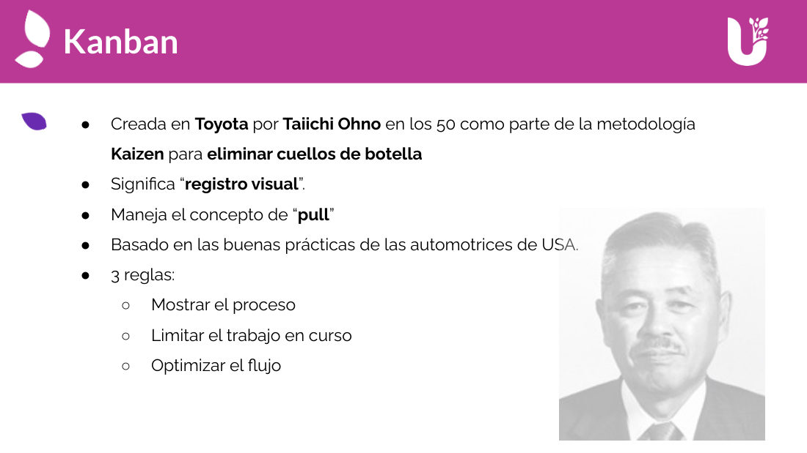
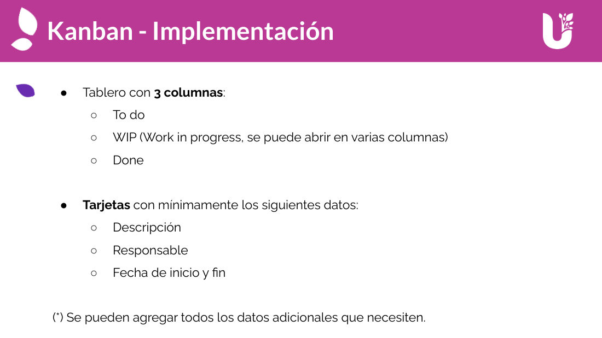

Clase 12 (2 de 2) · 28/10/2026 · Parcial del 18/11
Kanban: eliminar cuellos de botella limitando el trabajo en curso
La pregunta que el profesor casi siempre toma, la regla que dijo que puede tomar y cómo se une con Lean.
Viene de la Clase 12a: la muda de espera. También de Scrum, que sirve de comparación.
Alimenta la guía del parcial del 18/11.
Antes de empezar · repaso de la Clase 12a
Sin mirar: los siete tipos de muda de la cátedra. ¿Cuáles son «del operario»?
Transporte, inventario, movimiento, espera, sobreprocesamiento, sobreproducción y defectos. «Del operario»: movimiento y espera. La espera es la que conecta con Kanban. Repasar en la Clase 12a.
Aviso del profesor. En clase dijo que en los parciales casi siempre pregunta cuál es el objetivo de Kanban, y que puede tomar la regla de limitar el trabajo en curso. La Idea 1 tiene la respuesta modelo; la de los otros enfoques está en la guía del parcial.
Idea 1 · El objetivo de Kanban: la pregunta que casi siempre toma
Kanban, según la cátedra. La diapositiva de la clase 12 lo dice así:

| Dato (cátedra) | Para recordar |
|---|---|
| Origen | Toyota, Taiichi Ohno, años 50, dentro de Kaizen (mejora continua) |
| Objetivo | Eliminar cuellos de botella |
| Significado | «Registro visual»: la tarjeta, el tablero |
| Concepto clave | Pull: se toma trabajo cuando hay capacidad |
| Inspiración | Buenas prácticas de las automotrices de EE. UU. |
| 3 reglas | 1. Mostrar el proceso · 2. Limitar el trabajo en curso · 3. Optimizar el flujo |
Respuesta modelo para el parcial. «Kanban nació en Toyota (Taiichi Ohno, años 50, dentro de Kaizen) con el objetivo de eliminar cuellos de botella. Para eso aplica tres reglas: mostrar el proceso en un tablero, limitar el trabajo en curso (WIP) y optimizar el flujo, trabajando con pull.»
Se arranca con lo que dice la diapositiva y se completa con las tres reglas: así queda claro que se sabe también el cómo.
La regla que el profesor marcó: limitar el trabajo en curso
Dijo que es posible que la tome. Hay que poder explicar qué es, cómo se hace y por qué funciona:
- Qué es: poner un número máximo de tarjetas en cada columna del tablero (el límite de WIP, por work in progress). Si «En pruebas» tiene límite 2, no puede haber una tercera historia en pruebas.
- Cómo se hace: cuando una columna llega a su límite, la anterior no le pasa más trabajo: espera a que salga una tarjeta (pull). La consigna del equipo pasa a ser «dejar de empezar, empezar a terminar».
- Por qué funciona: (1) el cuello de botella se ve, porque es la columna que siempre está llena y frena a las demás: así se cumple el objetivo de eliminarlo. (2) Hay menos cosas a medias: menos cambio de tarea y menos trabajo parcialmente terminado, que son desperdicios Lean. (3) Cada ítem termina antes, porque no compite con otros veinte.
| Ejemplo (propio) | Sin límite de WIP | Con límite de WIP = 2 |
|---|---|---|
| Una persona con 6 historias de 1 día cada una | Empieza las 6 a la vez y avanza un poco cada día: todas terminan recién el día 6, más el tiempo perdido al cambiar de una a otra | Trabaja de a dos: las primeras terminan el día 2, y el usuario ya tiene valor mientras sigue con el resto |
Complemento. La Kanban Guide (2025) dice algo compatible: define Kanban como «una estrategia para optimizar el flujo de valor» y pide controlar explícitamente el WIP. Para el parcial, usar las palabras de la cátedra.
Idea 2 · El tablero: WIP, pull y push
La cátedra define cómo se implementa: un tablero con 3 columnas y tarjetas con unos datos mínimos.

| Elemento (cátedra) | Qué lleva |
|---|---|
| Tablero | 3 columnas: To do (por hacer), WIP (work in progress, en curso) y Done (hecho). La columna WIP se puede abrir en varias, una por etapa (por ejemplo «En curso» y «Revisión»). |
| Tarjeta | Como mínimo: descripción, responsable y fecha de inicio y fin. Se pueden agregar todos los datos que haga falta. |
Las fechas de la tarjeta sirven para algo más que el registro: si una tarjeta lleva muchos días en la misma columna, ahí se está formando el cuello de botella. El diagrama abre la columna WIP en dos («En curso» y «Revisión») y le pone un límite a cada una.
WIP, pull y push
- WIP (trabajo en curso): los ítems empezados y no terminados. La guía exige controlar explícitamente cuántos hay entre que se inician y se terminan, y dice que eso mejora el foco y la colaboración.
- Pull (tirar): un ítem nuevo se empieza solo cuando hay una señal clara de capacidad, por ejemplo cuando el WIP baja del límite. Wikipedia lo contrasta con push: en un sistema push el trabajo se empuja al proceso cuando alguien lo pide, sin mirar la capacidad.
Ejemplo: el tablero de un equipo con una sola persona que prueba
El equipo de la web de reservas tiene cuatro desarrolladores y una persona que prueba. Columnas: Por hacer (To do) → En desarrollo (WIP 4) → En pruebas (WIP 2) → Hecho (Done): la columna WIP de la cátedra, abierta en dos. Cada tarjeta lleva la historia (descripción), quién la tiene (responsable) y las fechas de inicio y fin.
- «En pruebas» llega a 2 de 2Los desarrolladores terminan más rápido de lo que se prueba
- «En desarrollo» se llena: 4 de 4Nadie puede tomar una tarjeta nueva de «Por hacer»
- El cuello de botella queda a la vista: las pruebasFalta capacidad para probar, no para programar
- Los desarrolladores libres ayudan a probarSale una tarjeta, entra otra: el flujo vuelve a moverse
En un sistema push, los desarrolladores seguirían empezando historias y la pila sin probar crecería sin que nadie la vea hasta el final. Y no hay Sprints: el trabajo entra y sale de forma continua.
Las tres reglas en el ejemplo. Mostrar el proceso: el tablero con sus columnas. Limitar el trabajo en curso: los números 4 y 2. Optimizar el flujo: lo que el equipo hace cuando el límite le muestra el problema (ayudar a probar, sumar capacidad, cambiar el límite).
Herramientas comunes: Trello, Jira y Azure DevOps
La cátedra compara tres herramientas. La pregunta probable no es de memoria sino de criterio: cuál conviene según el tamaño del proyecto y del equipo.
| Herramienta | A favor (cátedra) | En contra (cátedra) | Conviene para… |
|---|---|---|---|
| Trello | Fácil de usar; la versión gratuita alcanza; muchos power-ups | Con equipos grandes se complica el seguimiento y el escalamiento | Equipos y proyectos chicos |
| Jira | Muy configurable; arma tableros y gráficos; muchísimos plug-ins | Licencia cara a partir de 10 usuarios; interfaz difícil al principio; demasiado potente para proyectos chicos | Equipos medianos o grandes que necesitan métricas |
| Azure DevOps | Integrado con la suite de Microsoft (pipelines, repositorios); pensado para grandes corporaciones; muchas empresas tienen convenios que lo abaratan | Puesta a punto compleja; visualmente poco agradable; no recomendable para proyectos chicos | Empresas grandes que ya trabajan con Microsoft |
La última columna es una síntesis propia de los pros y contras. En la actividad de la clase, los equipos armaron en Trello el Sprint actual de su proyecto, con historias de usuario partidas en tareas (el splitting de la Clase 10). O sea que un tablero Kanban también sirve para mostrar el trabajo de un Sprint de Scrum, aunque Kanban como método no use Sprints.
Complemento. La Kanban Guide (2025) propone medir el flujo con cuatro métricas: WIP (ítems empezados y no terminados), throughput (ítems terminados por unidad de tiempo), antigüedad de cada ítem (cuánto lleva abierto) y cycle time (cuánto tardó de punta a punta). No están en la cátedra.
Idea 3 · Pregunta de final: ¿qué relación hay entre Lean y Kanban?
El profesor la planteó como una cadena, «lo que no debería pasar»:
- El operario está esperando a que otro termine algoEso es muda de espera (del operario)
- Hay un cuello de botellaUna etapa no da abasto y frena a las demás
- Con KanbanMostrar el proceso, limitar el trabajo en curso, optimizar el flujo
- Se ataca el desperdicio de esperaKanban es una herramienta para cumplir el objetivo de Lean
Respuesta modelo. «Lean busca eliminar los desperdicios. Uno de ellos es la espera: cuando un operario espera a que otro termine, hay un cuello de botella. Kanban nació en Toyota justamente para eliminar cuellos de botella: muestra el proceso en un tablero, limita el trabajo en curso para que la etapa saturada quede a la vista y trabaja con pull, así nadie recibe trabajo que no puede procesar. Por eso Kanban es una forma concreta de atacar la muda de espera: Lean dice qué eliminar y Kanban da el cómo.»
De paso, limitar el WIP también reduce otra muda: el inventario (trabajo empezado y no terminado).
Idea 4 · Kanban junto a los otros enfoques
La pregunta del objetivo puede venir por cualquiera de los cuatro enfoques. La comparación completa (objetivo en una frase, qué controla cada uno y qué problema resuelve) está en la guía del parcial, porque mezcla todas las clases ágiles. Lo mínimo para esta lección:
| Scrum | Kanban | |
|---|---|---|
| Ritmo | Sprints de duración fija (2 semanas a 2 meses) | Flujo continuo: el trabajo entra y sale cuando hay capacidad |
| Qué limita | El tiempo: lo que entra en un Sprint | La cantidad en curso: el WIP por columna |
| Roles y ceremonias | 3 roles y 4 ceremonias definidas | La cátedra no define ninguno: 3 reglas y un tablero |
| Origen | Software; sus creadores firmaron el Manifiesto | Toyota, años 50: la fábrica |
La fila de roles y la de qué limita son una síntesis propia de las diapositivas. No son excluyentes: un equipo Scrum puede llevar su Sprint en un tablero Kanban, como en la actividad de Trello.
Práctica 1 · Recuperar sin mirar
Sin volver arriba: el objetivo de Kanban según la cátedra, su origen y sus tres reglas.
Eliminar cuellos de botella. Toyota, Taiichi Ohno, años 50, dentro de Kaizen; significa «registro visual»; maneja pull. Reglas: mostrar el proceso, limitar el trabajo en curso, optimizar el flujo.
Sin volver arriba: ¿por qué limitar el trabajo en curso elimina cuellos de botella? Explicarlo con un tablero.
Con un máximo por columna, la etapa lenta se llena y frena a las anteriores: el cuello de botella queda a la vista y se puede atacar. Además hay menos trabajo a medias y cada ítem termina antes.
Sin volver arriba: las columnas del tablero de la cátedra, los datos mínimos de una tarjeta y qué herramienta conviene para un proyecto chico.
To do, WIP (que se puede abrir en varias columnas) y Done. Tarjeta: descripción, responsable, fecha de inicio y fin. Proyecto chico: Trello, porque es fácil de usar y la versión gratuita alcanza; Jira y Azure DevOps son demasiado para eso.
Sin volver arriba: la cadena que une Lean con Kanban.
Espera del operario (muda) → cuello de botella → Kanban (mostrar, limitar, optimizar, pull) → se elimina la espera. Lean dice qué eliminar; Kanban, cómo.
Práctica 2 · Preguntas
¿Cuál es el objetivo de Kanban?
Un operario pasa horas esperando a que otro termine su parte. ¿Qué muda es y con qué se ataca?
¿Por qué limitar el trabajo en curso ayuda a eliminar cuellos de botella?
En un tablero Kanban, la columna «Revisión» llegó a su límite de WIP. ¿Qué ocurre en un sistema pull?
Según la cátedra, ¿qué datos lleva como mínimo una tarjeta Kanban?
Un equipo de cuatro personas arma un proyecto chico sin presupuesto. ¿Qué herramienta conviene, según los pros y contras de la cátedra?
Trampas de opción múltiple
| La opción tentadora | Por qué está mal |
|---|---|
| «El objetivo de Kanban es eliminar el desperdicio» | Ese es el de Lean. Kanban: eliminar cuellos de botella |
| «Kanban significa mejora continua» | Significa «registro visual». Mejora continua es Kaizen |
| «Kanban nació en Chrysler en los 90» | Eso es XP. Kanban: Toyota, Taiichi Ohno, años 50 |
| «Kanban maneja el concepto de push» | Maneja pull: se toma trabajo cuando hay capacidad |
| «Se inspiró en las automotrices japonesas» | La diapositiva dice: basado en las buenas prácticas de las automotrices de USA |
| «Las 3 reglas: transparencia, inspección, adaptación» | Esos son los pilares de Scrum. Reglas: mostrar el proceso, limitar el trabajo en curso, optimizar el flujo |
| «El tablero tiene Backlog, Sprint y Done» | Cátedra: To do, WIP y Done; WIP se puede abrir en varias columnas |
| «La tarjeta lleva como mínimo la estimación en puntos» | Mínimo: descripción, responsable, fecha de inicio y fin |
| «Limitar el WIP sirve para que el equipo haga más cosas a la vez» | Al revés: menos cosas a la vez, para que la etapa saturada se vea y cada ítem termine antes |
| «Jira conviene a un proyecto chico» | Demasiado potente para proyectos pequeños y caro desde 10 usuarios; proyecto chico → Trello |
Para repasar: glosario y hoja de repaso ágil (imprimible).